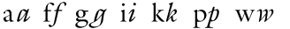
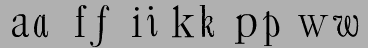

Stylistic Transformations on Fonts
The Style sub-menu provides a series of dialogs which allow you to create some common stylistic variations of latin fonts.
-
Stems and their widths
Modification of a Stem's width makes the font appear Bolder or Lighter -
Counters and their widths (a counter is the white space between stems)
Modification of a Counter's width makes the font appear Expanded or Condensed -
Left and Right Side Bearings
Behavior similar to Counter's
The results will probably always need to be examined and fixed up by the human eye, but they may provide a help in changing a font's attributes.
It "works" best on sans serif, non-Oblique fonts.
Bold
Bold fonts have thicker stems and are slightly more extended than normal fonts. In Knuth's Computers & Typesetting, the bold fonts have a stem width that is approximately 1.6 (1.68(at 12pt)-1.5(at 5pt)) times the stem width of the normal font. This is very similar to the 1.75 suggested by Microsoft's ratio of 700/400 (700 being the numeric weight of a bold font, and 400 being the numeric weight of a normal font).
In Knuth's Computer Modern Bold Extended Roman, the "m" glyph is extended to 1.15 times the width of the "m" in Computer Modern Roman, and the x-height is 1.03 times higher.
| Font | Ratio of Bold/Regular Stems | Ratio of DemiBold/Regular | Expansion | Bold serif height/Regular serif | Bold serif width/regular |
| Arial | 1.5 | 1 | |||
| Times New Roman | 1.7 | 1 | .98 | ||
| Computer Modern Roman | 1.68(at 12pt) - 1.5(at 5pt) | 1.15 | |||
| Adobe Helvetica | 1.6 | ||||
| Adobe Times | 1.56 | 1.17 | 1.10 | .97 | |
| Garamond Antiqua | 1.5 | 1.05 | .90 | ||
Point Size
At first glance this does not seem like much of a transformation, after all postscript and truetype fonts can be drawn at any pointsize. But traditionally, as the point-size decreases the boldness (thickness of the stems) increases slightly, the counters and side bearings also change. For metal type there were generally three drawings for a glyph in a given font, one for pointsizes less than 10, one for pointsizes 10,11 and 12, and one for display sizes (above 12). Most computer vector fonts do not show this change, while Knuth's Computer Modern fonts have a continuum:
| 17pt | 12pt | 10pt | 9pt | 8pt | 7pt | 6pt | 5pt | (12pt compared to cmr 12pt) | ||
|---|---|---|---|---|---|---|---|---|---|---|
| cmr | 83% | 100% | 109% | 116% | 120% | 124% | 130% | 139% | Computer Modern Roman | 100% |
| cmti | 100% | 106% | 112% | 115% | 122% | Computer Modern Text Italic | 94% | |||
| cmbx | 100% | 105% | 108% | 112% | 117% | 120% | 123% | Computer Modern Bold Extended | 170% | |
| cmtt | 100% | 109% | 116% | 120% | Computer Modern Typewriter | 100% | ||||
| cmss | 99% | 100% | 102% | 109% | 113% | Computer Modern Sans Serif | 120% |

To the left is an example of the same word (taken from a font specimen sheet) printed at 3 different point sizes (8,12 and 24) and then scaled up to the same size. The most obvious difference is that the glyphs are proportionally wider at the smaller pointsizes. It is less apparent that the stems of the letters are different:
| 24pt | 12pt | 8pt | |
|---|---|---|---|
| stem of the "n" (compared to 12pt) | 89% | 100% | 117% |
| counter of the "n" (compared to 12pt) | 104% | 100% | 89% |
| width of "originality" (compared to 12pt) | 93% | 100% | 104% |
SmallCaps
A SmallCaps font is made by scaling the capital letters to the x-height (so that they are the same height as lower case letters without ascenders) and then adjusting the stem widths (emboldening) so that they too will match stem widths of the lower case.
Italic
The Italic transformation contains at least four parts: A change in the letterforms of the lowercase letters, a skew, and a condensation and a narrowing of the vertical stems..
| Italic Angle | Condensation | Stem width change | |
| Computer Modern Text Italic | 14º | 91% | 94% |
| Times New Roman | 16º | 100% | 91% |
| Adobe Times | 15 | 100% | 92% |
Letterform changes in Galliard: 
Letterform changes in
Caslon:
(These glyphs have been deskewed to display the shape transformation
better.)
Cyrillic Letterform
changes:
(These glyphs are also deskewed.)
This is not a complete list, but it shows most of the salient features of such a transformation.
Oblique
The Oblique transformation is a simple skew,
| Computer Modern Slanted Sans Serif | 9.5º |
| Arial Italic (actually an oblique) | 12º |
| Adobe Helvetica Oblique | 12º |
Extended/Condensed
In these two transformations the stem width is held constant but the horizontal counter sizes and side bearings are increased (or decreased for condensed).